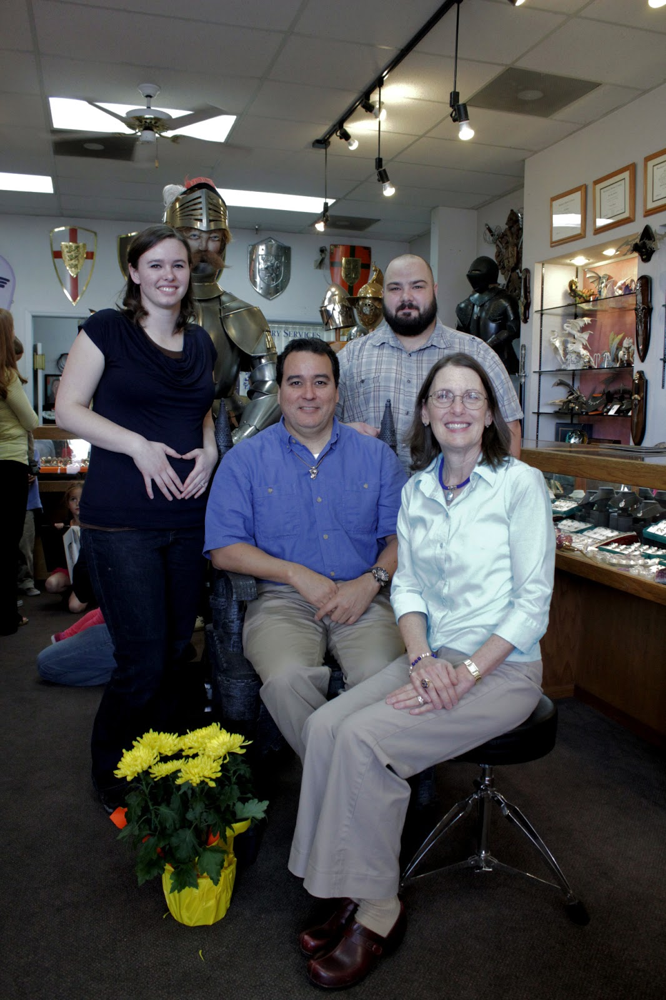

Trip to California!!
Catherine and I started saving up to take a trip for our 5th anniversary coming up here in April, so when an invitation came to visit the family in California for my mom's birthday, we jumped at the chance and changed up our plans!
Going back to California was a lot of fun for us. This was our first time back to Cali in almost 5 years. We took pictures at dad's shop (below), ate at Canton, and even visited "The Naked Nut;" a factory I worked at when I lived in Visalia. I helped rebuild and get running an old 1926 Model T Ford while I worked there, one of the best experiences of my life! We wrapped up the day with dinner at Round Table Pizza, our favorite Pizza place! (Sadly, none in Utah).
Catherine and I LOVE road tripping! We were pretty tired by the end of this one though, and were excited to get home! This trip was also my first time on the Vegas strip! We stayed at The Mirage hotel, which was pretty nice! Catherine thought the room was super tacky, but I figured it fit the normal "Vegas" tackiness. :)
It was great to go home and see everyone! I didn't get pictures of the rest of the trip because my camera battery died, and I forgot to take the charger. :(
Going back to California was a lot of fun for us. This was our first time back to Cali in almost 5 years. We took pictures at dad's shop (below), ate at Canton, and even visited "The Naked Nut;" a factory I worked at when I lived in Visalia. I helped rebuild and get running an old 1926 Model T Ford while I worked there, one of the best experiences of my life! We wrapped up the day with dinner at Round Table Pizza, our favorite Pizza place! (Sadly, none in Utah).
{kind=link}
 | |
| Happy Birthday Mom! |
{kind=link}
It was great to go home and see everyone! I didn't get pictures of the rest of the trip because my camera battery died, and I forgot to take the charger. :(